Video 1. Spatial synchronization
Reference, measured state, Gaussian proposal, and verified output.
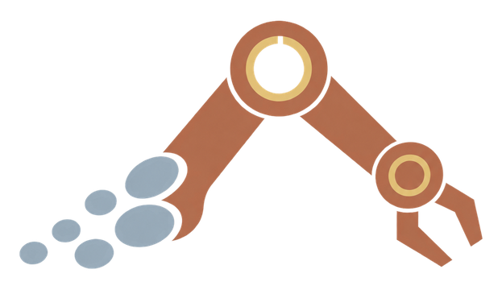
KineSync-GSReference, measured state, Gaussian proposal, and verified output.
Matched head and wrist streams from a real manipulation trajectory.
A second object and trajectory under the same synchronized interface.
Native-policy bottles-in-bin execution through an external state adapter.
Articulated Gaussian twins are useful only when rendered appearance remains aligned with the physical robot state. Under stale or conflicting views, inverse rendering can continue lowering image loss while moving the estimated joints farther from the robot. KineSync-GS therefore separates estimation from state-changing authority: rendering or motion produces a bounded correction proposal, cross-view or motion evidence evaluates it, and a shared interface either commits the verified whole-state update or preserves the measured state.
Forward kinematics binds Gaussians to robot links. Multi-view inverse rendering or motion alignment estimates a coordinated correction within explicit bounds.
Cross-view support, visual gain, motion correlation, and state consistency determine whether the proposal supports a twin-level update.
The complete proposal is committed after verification. The shared fallback preserves the incoming measurement and records the decision.
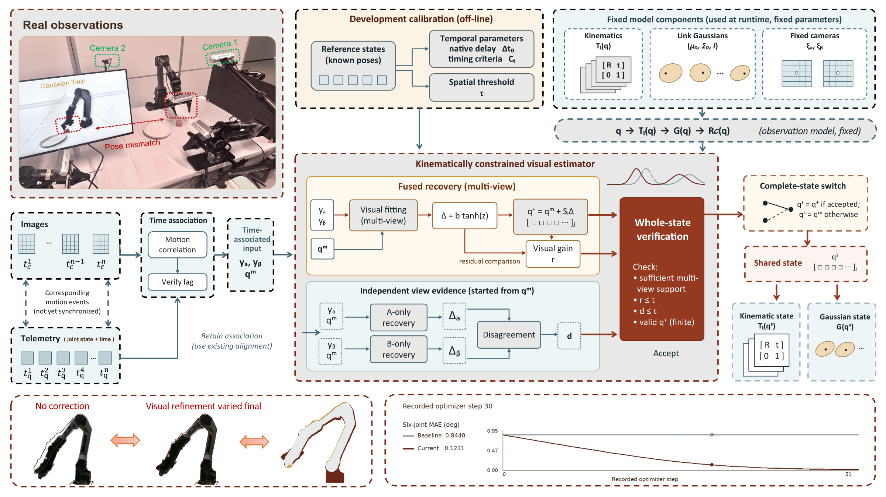
The articulated renderer first proposes one bounded, coordinated correction. Separately recovered view-specific estimates then provide the cross-view evidence that controls whether the complete state may modify the twin.
r measures normalized visual gain, g compares per-view gradients, a compares correction directions, and d limits normalized state disagreement. The thresholds τ are fixed after development.
Acceptance commits the fused joint vector atomically; rejection preserves the incoming measurement exactly. Appearance fitting therefore proposes the correction, while cross-view evidence retains state-changing authority.
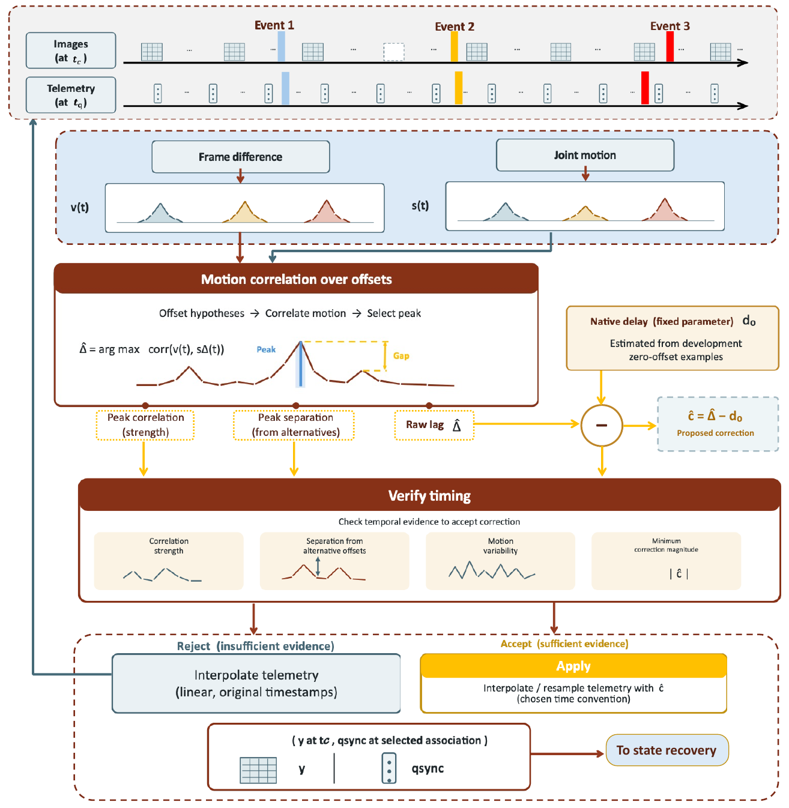
Whole-state qMAE over 48 held-out view and measurement conditions.
Harmful commits, while retaining all 12 proposals that improve state.
Whole-state qMAE with 0.36% harmful updates.
Task-macro success over 240 paired real-robot episodes.
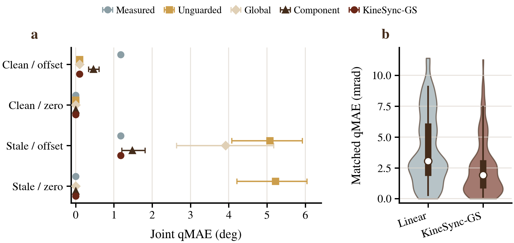
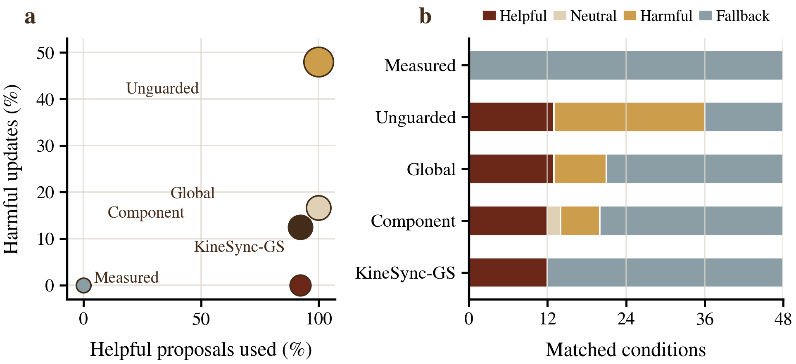
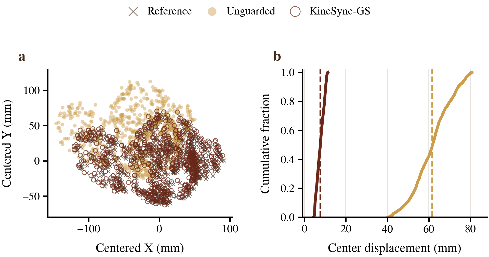
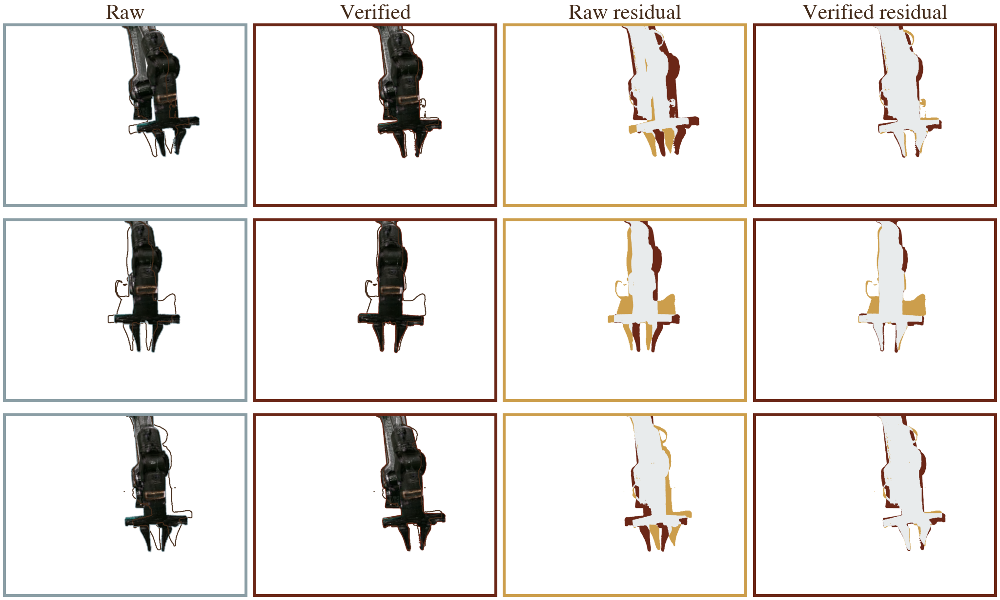
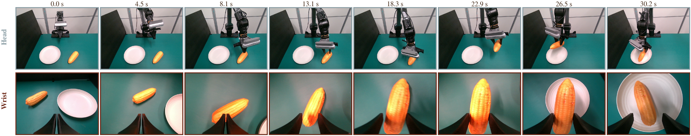
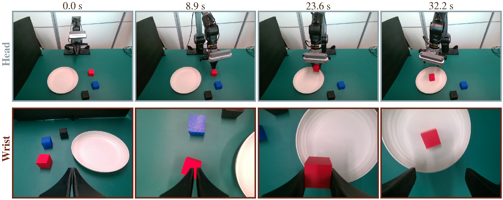
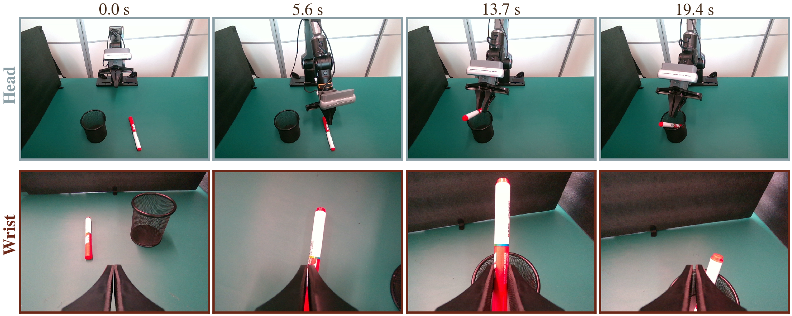
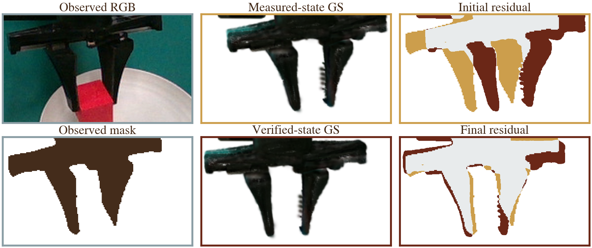
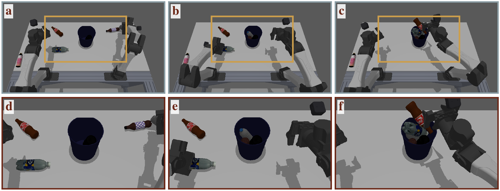
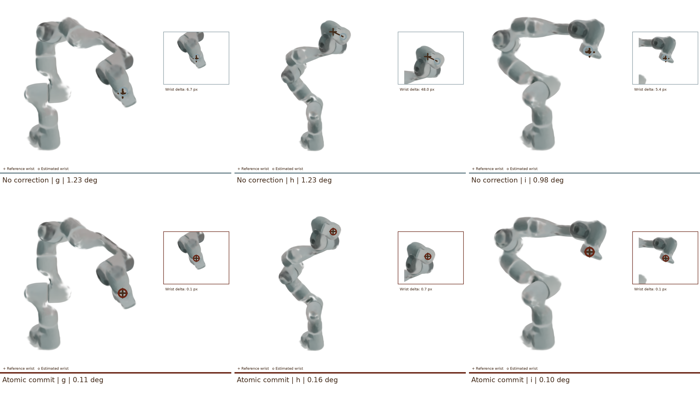
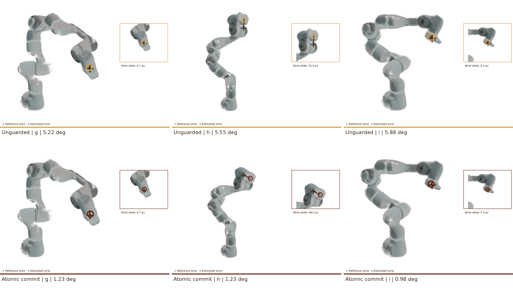
| Evaluation | Method / state | qMAE ↓ | Recovery ↑ | Beneficial precision ↑ | Verified-update evidence |
|---|---|---|---|---|---|
| Franka · 48 held-out conditions | Measured state | 0.590° | — | — | No proposed update |
| KineSync-GS | 0.322° | — | 12/12 useful retained | 0/48 harmful updates | |
| PiPER · Component-GS | Delayed state | 84.06 mrad | 35.91% | — | Incoming measurement |
| Verified retrieval | 2.26 mrad | 94.67% | 94.55% | Whole-state commit / fallback | |
| PiPER · Hybrid-GS | Delayed state | 84.06 mrad | 35.91% | — | Incoming measurement |
| Verified retrieval | 2.92 mrad | 93.99% | 95.03% | Whole-state commit / fallback | |
| Telemetry · 630 conditions | Raw linear | 4.03 mrad | 14.29% | — | Unverified association |
| Verified alignment | 2.47 mrad | 39.09% | 97.97% | Verified resampling / fallback |
| Task | Raw qMAE ↓ | KineSync-GS qMAE ↓ | Recovery ↑ | Harmful updates ↓ | Raw-state success | KineSync-state success ↑ |
|---|---|---|---|---|---|---|
| Take-Pens | 12.84 mrad | 3.46 mrad | 79.62% | 0.42% | 45.00% (18/40) | 62.50% (25/40) |
| Red-Cube-to-Plate | 11.26 mrad | 2.94 mrad | 84.36% | 0.36% | 62.50% (25/40) | 75.00% (30/40) |
| Corn-to-Plate | 10.92 mrad | 2.81 mrad | 85.18% | 0.31% | 67.50% (27/40) | 77.50% (31/40) |
| Task macro | 11.67 mrad | 3.07 mrad | 83.05% | 0.36% | 58.33% | 71.67% |
Estimators, verified updates, hardware adapters, evaluation tools, portable protocol definitions, and asset-independent tests are included in the anonymous repository.
Browse the repository →git clone git@github.com:Anonymous-for-Sub/KineSync-GS.git
cd KineSync-GS
python -m venv .venv
source .venv/bin/activate
python -m pip install -e .
PYTHONPATH=src python -m unittest discover -s tests -v@inproceedings{kinesyncgs2027,
title = {KineSync-GS: Verified Visual State Synchronization
for Articulated Gaussian Twins},
author = {Anonymous Authors},
booktitle = {Under Review},
year = {2027}
}